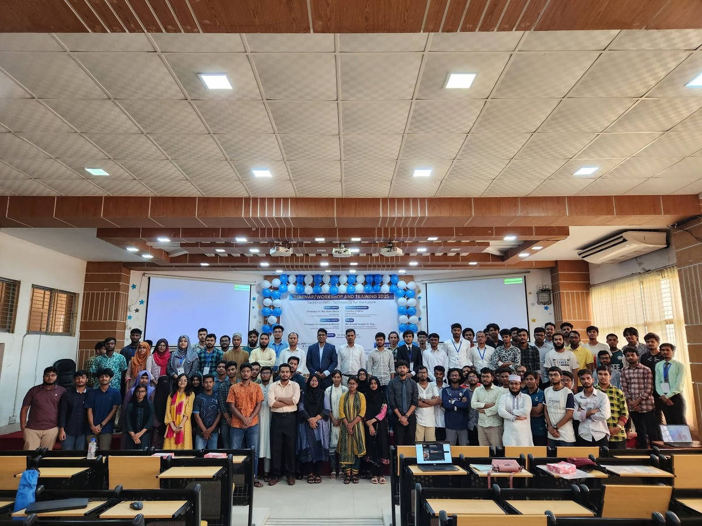

TechFrontiers: Technology for the Future
On May 24, 2025, the Department of Electrical and Electronic Engineering (EEE) at Jashore University of Science and Technology (JUST) organized its flagship day-long technical event, “TechFrontiers: Technology for the Future” at Central Gallery, JUST. Md. Ratul Hasan anchored the entire program alongside co-anchor Jannatun Nayeem, steering the inaugural session, keynote address by Huawei Technologies, hands-on PCB design workshop by Walton Digi-Tech, student research presentations, and crest presentations. Additionally, Ratul designed the official ID cards for the event volunteers.

Participants, keynote speaker Chandra Shekhar (Huawei Technologies), PCB trainer Md Nadim Mostafa (Walton Digi-Tech), Convenor Dr. Engr. Imran Khan, EEE faculty members, and student attendees gathered at Central Gallery, JUST.
Held at Central Gallery, Jashore University of Science and Technology.
Anchored on stage alongside Jannatun Nayeem and designed volunteer ID cards.
Keynote address by Huawei Technologies and PCB workshop by Walton Digi-Tech.
Flagship seminar, technical workshop, oral and poster research presentations.
Departmental Flagship Seminar & Technical Workshop
On May 24, 2025, the Department of Electrical and Electronic Engineering (EEE) at Jashore University of Science and Technology (JUST) organized “TechFrontiers: Technology for the Future” at Central Gallery, JUST. Under the convenorship of Dr. Engr. Imran Khan, Chairman of the Department of EEE, the event brought together university leadership, industry experts from multinational tech corporations, departmental faculty members, and student researchers to exchange technical insights, discuss emerging technologies, and provide practical engineering training.
The program was honored by the presence of Professor Dr. Md. Abdul Mazid, Vice Chancellor of JUST, as Chief Guest; Professor Dr. Hossain Al Mamun, Treasurer of JUST, as Special Guest; and Dr. Engr. Md. Amzad Hossain as Guest of Honor.
Stage Moderation Alongside Co-Anchor Jannatun Nayeem
Md. Ratul Hasan was the event anchor along with co-anchor Jannatun Nayeem. Together, they moderated the entire program from stage at Central Gallery across each scheduled segment of the day:
Opened the event, delivered welcome announcements, introduced university leaders—including Chief Guest Vice Chancellor Prof. Dr. Md. Abdul Mazid, Special Guest Treasurer Prof. Dr. Hossain Al Mamun, Guest of Honor Dr. Engr. Md. Amzad Hossain, and Convenor Dr. Engr. Imran Khan—and outlined the objectives of TechFrontiers 2025.
Introduced keynote speaker Chandra Shekhar, Principal Engineer at Huawei Technologies Bangladesh Ltd. (South Asia Service Experience & System Integration), who presented an industry keynote on the future trajectories of communication, cloud, and smart infrastructure technologies.
Moderated the transition into the technical training workshop on PCB Design, conducted by industry expert Md Nadim Mostafa (Deputy Director, Computer R&I Electronics, Walton Digi-Tech Industries Ltd.), and facilitated the schedule for parallel student oral and poster research presentations.
Conducted stage choreography for official crest presentations to the keynote speaker and industry trainer, announced the Best Poster and Best Paper awards, and concluded the program with the official vote of thanks.
Volunteer ID Card Design & Visual Identity
Beyond on-stage anchoring responsibilities, Md. Ratul Hasan designed the official ID cards for the event volunteers. The volunteer cards established clear departmental branding, official event designations, and role indicators for the organizing student team responsible for participant registration, auditorium logistics, stage coordination, and trainer assistance throughout Central Gallery.
Industry Sessions & Research Competitions
Keynote Address
Delivered by Chandra Shekhar (Huawei Technologies Bangladesh Ltd.) on telecommunications infrastructure, modern connectivity ecosystems, and technological trends shaping electrical and electronic engineering.
Hands-on PCB Design Workshop
Conducted by Md Nadim Mostafa (Walton Digi-Tech Industries Ltd.), training students in schematic capture, component routing, multi-layer board constraints, and industrial manufacturing readiness.
Oral & Poster Presentations
Students and researchers presented hardware prototypes and engineering research papers before faculty review panels, competing for Best Poster Award and Best Paper Award honors.
Institutional Recognition
Official Crests of Honor presented to the keynote speaker and industry trainer by EEE Department Chairman Dr. Engr. Imran Khan in recognition of their contributions to student technical development.